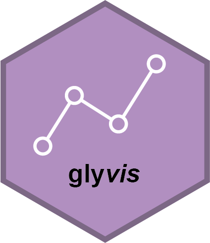
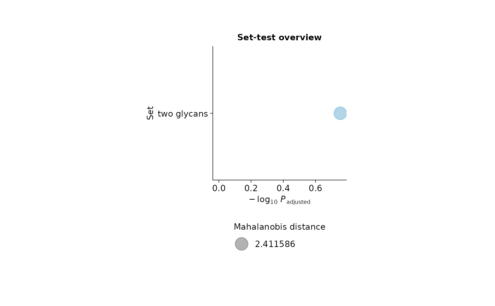

Bubble plots for glystats test results
plot_bubble.RdPlot one row per test with the supplied -log10(P) on the horizontal
axis. Bubble area represents effect magnitude, and colors indicate positive
or negative effects only when the result supplies a signed effect.
Usage
plot_bubble(
x,
...,
variables = NULL,
p_col = "p_adj",
title = NULL,
width = NULL,
height = NULL,
fontsize = 9,
family = "sans",
palette = NULL
)
# S3 method for class 'glystats_set_test_res'
autoplot(
object,
...,
variables = NULL,
p_col = "p_adj",
title = NULL,
width = NULL,
height = NULL,
fontsize = 9,
family = "sans",
palette = NULL
)Arguments
- x
A result from
glystats::gly_set_test(),glystats::gly_ttest(),glystats::gly_wilcox(),glystats::gly_anova(),glystats::gly_kruskal(),glystats::gly_ancova(),glystats::gly_limma(),glystats::gly_linear_model(),glystats::gly_cox(), orglystats::gly_cor(). The plot does not fit a test from an experiment.- ...
Must be empty. Supply plotting controls by their full argument names.
- variables
Character vector of unique fitted IDs to display, in top-to-bottom order. Use set IDs for a set test, and variable or sample IDs for correlation, depending on how it was fit. A correlation pair is included once if either endpoint matches; it is ordered by the first matching ID. All terms or contrasts for a selected variable are retained.
NULL(the default) displays up to ten rows with the smallest plotted p-values, preserving input order for ties. Explicit selection is not limited to ten rows.- p_col
Plot supplied adjusted p-values (
"p_adj", the default) or explicitly request unadjusted p-values ("p_val"). If adjusted p-values were not computed, request"p_val". The plot does not adjust p-values.- title
Optional plot title. Defaults to
NULL.- width, height
Plot-area dimensions in millimetres.
NULLuses the tidyplots defaults (50 by 50 mm);NAfills the available graphics device. These are not export-page dimensions.- fontsize
Base text size in points. Defaults to 9.
- family
Font family. Defaults to
"sans".- palette
Color vector. Unsigned plots use the first color, or the default glyvis blue. Signed plots accept colors for
"Negative","Zero"and"Positive"; an unnamed palette follows this order. Defaults are orange, glyvis blue, and dark blue, respectively. Missing effects use the default glyvis blue. All points use alpha 0.3.- object
A set-test result from
glystats::gly_set_test().
Effects and test rows
Set test: Mahalanobis distance (unsigned), not member count or covariance rank.
t-test: absolute Cohen's d (paired: absolute d-z), with sign by color.
Wilcoxon: absolute rank-biserial correlation, with sign by color.
ANOVA: eta-squared (paired: partial eta-squared), unsigned.
Kruskal/Friedman: epsilon-squared or Kendall's W, unsigned.
ANCOVA: the main group tests supply no effect magnitude; dots have a uniform size and no direction. ANOVA, Kruskal and ANCOVA use main tests, not post-hoc comparisons.
Limma: absolute log2 fold change, or absolute native contrast estimate for raw or logx analysis. Linear model: absolute estimated coefficient or contrast, with sign by color for both. Labels identify the respective contrast or term. Don't compare sizes between differently scaled terms.
Cox: absolute log hazard ratio, with sign by color.
Correlation: absolute correlation coefficient, with sign by color; rows are tested variable or sample pairs.
Results without identifiable row-level p-values (e.g., ROC, untested fold changes, ordination and clustering) are not supported.
Missing and zero values
Positive p-values are plotted at their exact -log10(P) positions. Values
reported as zero share a finite display position one unit beyond the largest
plotted finite score (or at 1 if there are none). The position is reported
in the caption and does not replace the original p-values.
The default ranking excludes rows with missing p-values or failed set tests. If no p-value is available, the first ten rows are labeled without bubbles. Explicitly selected rows with unavailable p-values also retain their labels without bubbles. A rank-deficient set is eligible if the test succeeded. With a valid p-value, an open circle marks an unavailable effect, including a negative estimate of an unsigned magnitude (e.g., epsilon-squared). A small filled dot marks zero effect. Empty results raise an error.
Examples
if (requireNamespace("glystats", quietly = TRUE)) {
mat <- rbind(
"glycan A" = c(1, 3, 2, 3, 5, 6),
"glycan B" = c(2, 1, 4, 5, 2, 6)
)
colnames(mat) <- paste0("S", 1:6)
exp <- SummarizedExperiment::SummarizedExperiment(
assays = list(abundance = mat),
colData = S4Vectors::DataFrame(group = rep(c("A", "B"), each = 3))
)
fit <- glystats::gly_set_test(
exp,
sets = list(singleton = "glycan A", "two glycans" = rownames(mat)),
log_transform = FALSE
)
plot_bubble(fit, variables = "two glycans", title = "Set-test overview")
}
#> ℹ Ref Group: "A"
#> ℹ Test Group: "B"
